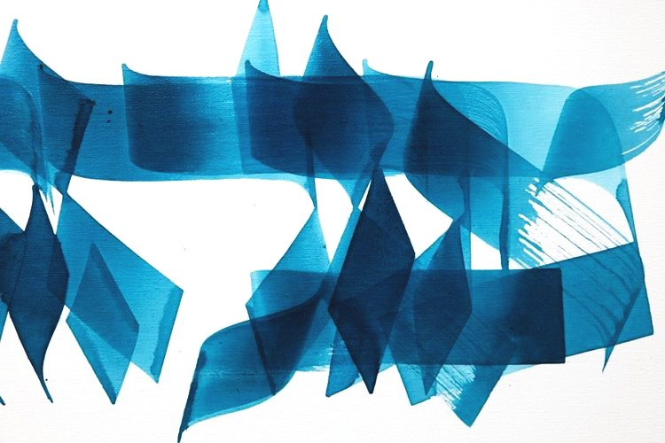

The Music of Jewish Texts. Victoria Hanna
Victoria Hanna: I believe my work can be taken in by all kinds of people, not only by the so-called "keepers of the arts who dwell in a temple full of incense".
An interview with Victoria Hanna by Dov Elfon. Translated from Russian.
For the first part of the interview see "The Treasures of Victoria Hanna's Hebrew Words".

Dov Elfon: How would you describe your music to those who are not prepared to listen to it?
Victoria Hanna: Most of the texts I work with are very well-known texts: texts connected with the rituals of learning the Alef-Bet (the Hebrew alphabet), texts of the book "Yetzirah" (the Book of Creation), where it is said that the whole world was created by the word that came out of the mouth of the Most High. I also turn to the texts of "Shir ha-Shirim" (the Song of Songs).
With these texts I can come to a club in New York, to completely secular people, and present them in a modern manner, make rap music of them. On other occasions you may find me with the very same texts in an old people's home. They may be completely religious people who have invited me. And I stand in the dining room where these people gather and perform a cappella, without any accompaniment, and sing the same texts for them. And tears come to their eyes, because they know these texts well; they are very close to them.
Dov Elfon: You grew up in Jerusalem in a religious family; your father was a rabbi. So I suppose that at first you sang only prayers?
Victoria Hanna: I not only sang, but every morning from the first grade I moved my lips over the words. Like exercises at the barre in ballet. These are special texts said every day. And so every morning I moved my lips without letting a sound out of my mouth.
Dov Elfon: When did the voice appear?
Victoria Hanna: When did the voice appear? You know, as a child I had problems with speech; it was hard for me to talk; I stammered. Traces of it remain to this day. And when, for example, the children laughed at me, I would begin to sing to God. I would climb onto a rock and sing to Him, because I believed that only He could help me.
And all this joining of the wish to express and say something that gets stuck in your throat with an ability that suddenly arises: to send your voice in a direction not connected with what is happening here and now. All these texts constantly spoken in my mouth... I had to move my lips to let them be born and produce something. All this gave great inspiration to what I do today.
My father's house is filled with books. You go in, and all around, everywhere, there are books. These letters, these pages... I love their smell so much. It is something kept in my mouth. And this desire: to take these stunning texts and open them, to speak them and feed on them.
Dov Elfon: This ultra-modern music of yours hardly fits the format of what is broadcast on Israel's radio waves today. How do you react to that?

Victoria Hanna: Some suggest that I make something more acceptable: verse, chorus, verse, chorus. Make something like that of your material so that it can be broadcast on the radio. For me the radio is a kind of space. I believe my work can be taken in by all kinds of people, not only by the so-called "keepers of the arts who dwell in a temple full of incense".
Dov Elfon: Your success takes you to unexpected places. Does that surprise you?
Victoria Hanna: Very much. I am very curious to hear the work of the voice and lips in different cultures. For example, I was in Mongolia. There I worked with a Mongolian singer in his village. And there I sang for all the people of that village.
I also happened to be in Ukraine. And there I witnessed how various grandmothers sing so that something will come to pass.
Dov Elfon: If your success goes on growing at the same pace, your music may become the mainstream of Israeli music.
Victoria Hanna: I am very interested in communicating; after all, the voice is an instrument of communication. And it makes me very glad that people are opening up to these texts. And if my work is accepted, I shall not feel so lonely.
Watch the video interview on Facebook (video dubbed into Russian by Ephraim Kalish).
Read also about Victoria Hanna and her work: "The Treasures of Victoria Hanna's Hebrew Words".
 The Passover Haggadah. A Historical Note
The Passover Haggadah. A Historical Note Purim. Holy Laughter
Purim. Holy Laughter Contemporary Artists Interpret the Passover Haggadah
Contemporary Artists Interpret the Passover Haggadah